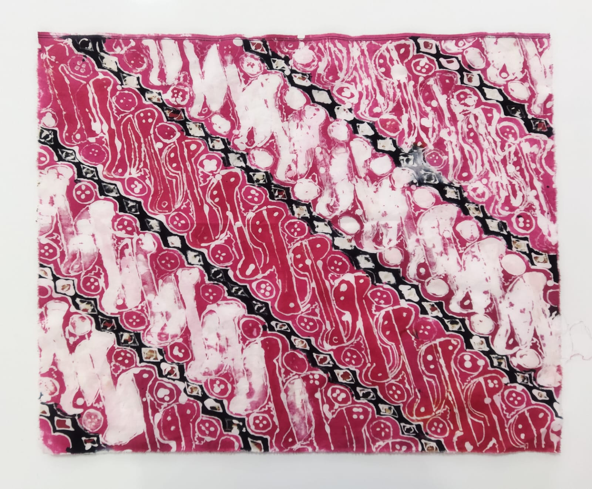

Sejarah, Makna, dan Filosofi Batik Parang

Sejarah Batik Parang yaitu Batik Parang merupakan salah satu motif batik tertua di Indonesia yang berasal dari Keraton Mataram di Jawa Tengah pada abad ke-17. Kata "Parang" sendiri berasal dari kata "pereng" yang berarti lereng atau garis miring. Motif ini awalnya diciptakan oleh Sultan Agung dari Mataram, dan dulunya hanya boleh dikenakan oleh keluarga kerajaan. Oleh karena itu, batik Parang sering dianggap sebagai simbol kekuasaan, kebijaksanaan, dan kehormatan. Seiring perkembangan zaman, motif ini kemudian menyebar dan digunakan oleh masyarakat luas, meskipun tetap identik dengan nuansa kerajaan. Batik Parang memiliki berbagai variasi, seperti Parang Rusak, Parang Barong, Parang Kusumo, dan Parang Klitik, yang masing-masing memiliki makna dan aturan pemakaian tersendiri dalam lingkungan keraton. Pada masa itu, motif ini digunakan secara eksklusif oleh bangsawan dan keluarga kerajaan sebagai simbol status dan kekuasaan. Sehingga rakyat biasa tidak boleh menggunakan motif ini, namun sekarang semua orang dari berbagai kalangan sudah biasa menggunakan motif ini bahkan digunakan dalam kehidupan sehari - hari entah sebagai pakaian ataupun sarung. Makna dan filosofi dari motif Batik Parang sendiri adalah Parang merupakan motif yang menggambarkan ombak di laut selatan Yogyakarta yang mengenai tebing karang. Bentuk motif tersebut melambangkan kekuasaan, kekuatan, dan semangat yang tak pernah surut. Itu sebabnya batik parang disebut batik larangan karena terlarang untuk rakyat biasa dan hanya boleh dipakai raja beserta keturunannya. Bentuk motif parang yang saling menyambung menggambarkan jalinan hidup yang tidak pernah putus. Bentuk motif ini dinilai menjadi simbol hubungan antara manusia dengan alam, manusia dengan manusia, dan manusia dengan Tuhannya. Sementara itu, garis diagonal yang terdapat dalam motif parang menggambarkan bahwa manusia harus memiliki cita-cita yang luhur, kokoh dalam pendirian, serta setia pada nilai kebenaran. Motif batik parang juga memiliki makna agar tidak mudah menyerah dalam mengarungi bahtera kehidupan.
Menyiapkan Alat dan Bahan: Siapkan kain putih, canting, lilin/malam, pewarna dan kompor. Membuat Pola: Gambarlah pola batik di atas kain menggunakan pensil. Mencanting: Panaskan lilin, kemudian gunakan canting untuk menutup garis-garis pola dengan lilin. Pewarnaan: Campur bubuk remasol dengan air lalu celupkan kain ke dalam larutan pewarna sesuai keinginan ataupun juga bisa menggunakan kuas atau alat lain untuk mengoleskannya pada kain.. Pengikatan Warna: Oleskan waterglass pada kain secara menyeluruh. Proses ini bisa dilakukan bersamaan dengan proses pewarnaan dengan cara mencampur larutan pewarna dengan waterglass secukupnya. Sehingga larutan pewarna akan memiliki sifat yang sama seperti waterglass yaitu mengikat warna. Pengeringan: Jemur kain hingga kering sempurna. Pelorodan: Rebus kain dalam air panas untuk menghilangkan lilin dan memperlihatkan motif batik. Gambar diatas merupakan hasil akhir kami mencoba membuat Batik Parang. Memang terdapat beberapa kesalahan yaitu menuangkan lilin terlalu banyak dan juga lilin kadang menetes dari canting. Bahan dan Alat
Langkah-Langkah Membuat Batik
Hasil Akhir dan Kesimpulan

Dengan proyek P5 kali ini, kami dapat belajar lebih banyak mengenai ragam hias Nusantara terutama Batik Nusantara. Tidak hanya mengenai pengetahuan dasarnya, namun kami juga praktek membuat Batik sehingga kami juga tahu proses pembuatannya.